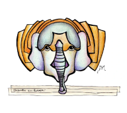
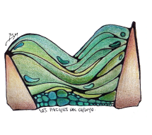
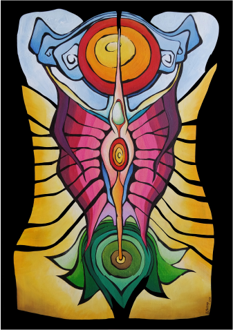
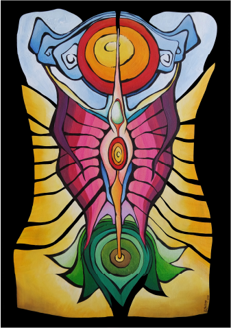
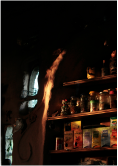
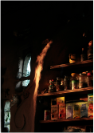
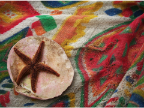
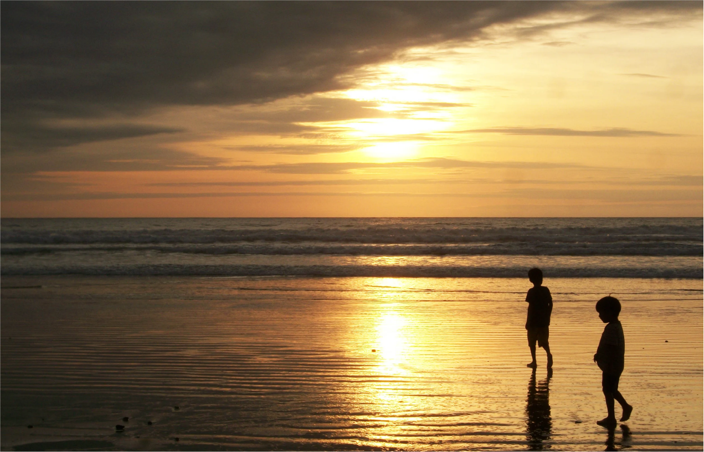

MI CREATIVIDAD TOMA FORMA


SE MATERIALIZA EN EL VIAJE
![La imagen muestra un dibujo abstracto hecho a mano con lapiceras y microfibras de colores negros, grises y amarillos. Representa un taxi amarillo proveniente de la India, siendo exprimido en el medio por una mano que lo estruja. Del lado izquierdo de la imagen, un texto escrito a mano en cursiva con la siguiente leyenda: Calcuta (India). Las bocinas no paran nunca, los autos no frenan y cruza como puedas. La temperatura no ayuda nada, pero apagan los motores cuando frenan en el semaforo los autos. Los baños públicos, las duchas públicas y la gente durmiendo en la calle son parte del paisaje natural.](../assets/img/mi_arte_taxi_cuaderno.webp)
![La imagen representa un cuaderno de hojas lisas abierto en el medio. En la página de la izquierda un texto con dos circunferencias con dibujos. La primera circunferencia, ubicada en la parte superior derecha de la hoja, contiene un dibujo en colores que representa una planta con semillas y polen a la vista. La segunda circunferencia contiene una representacion de la misma planta en blanco y negro, pero a medio florecer, con espinas y hojas puntiagudas. En la pagina de la derecha vemos una representación abstracta de una planta: un tallo verde lleno de espinas violetas con un interior redondo brillante que contiene el centro de este (semejante a un mandala simple) y en la base hay de forma simetrica en cada lado hojas de planta verde. Al pie de la pagina, la siguiente frase escrita a mano: Hoy me detuve acá.](../assets/img/mi_arte_pagina_cuaderno.webp)
![Imagen de un cuadro abstracto con colores vibrantes y un reborde negro en el marco. Representa el rostro de una mujer de piel azul, con un tercer ojo que sale de su frente, que se transforma en una flor con un dios de ojos brillantes. De la mujer se desprenden multiples petalos de colores, que en conjunto forman un degrade que parte de una base roja hasta llegar a la altura en tonos frios. El fondo es un tramado de hexagonos de colores verdes y celestes. En el cuello de la mujer, una bola, similar a un colla, genera un brillo que se extiende al rostro del personaje principal.](../assets/img/mi_arte_cuadro_01.webp)


![Imagen de un cuadro abstracto muy alargado y angosto. Representa una mujer que se agarra fuertemente la cara con sus manos, solo dejando a la vista sus labios rojos y nariz torcida. Sus dedos se convierten en cintas de colores. Y en la parte superior estas cintas sostienen un edificio gris todo destrozado, del cual sobresalen y desbordan las cintas de colores. La mujer se encuentra sobre lo que parece ser un oceano azul, pero a la vez construído como si fuera un laberinto de paredes. Al fondo del océano](../assets/img/cuadro_alargado_mi_arte.webp)
SE MATERIALIZA EN UN LIENZO
![La imagen muestra un cuadro abstracto de una noche en un mundo fantástico. En el centro una mujer desnuda que sale de un velo oscuro, con una corona en su cabeza hecha de laminas plateadas. Al rededor de la mujer, una escalera de colores violetas, que asciende hasta el centro del cuadro. De ahi vemos una esfera negra con luces blancas que tiene hilos que lo conectan a distintas partes del cuadro. En el lateral izquierdo de la imagen, se recorta un rombo con un campo verde. Y del lado derecho, el recorte muestra una playa con un mar aterrizando. Se ven múltiples detalles, como icosaedros blancos o huecos con estrellas en su interior.](../assets/img/cuadro_01_apofenia.webp) 

![Cuadro abstracto de un mundo imaginario compuesto por multiples elementos. En el centro de la imagen una mujer, cuyas manos separa el retrato, fragmentando una montaña en dos mitades. Un campo verde es representado como un laberinto de paredes altas de tonos claros. Este tambien se encuentra dividido a la mitad. En el centro de la imagen, un sol naranja, y unos árboles que forman parte de un paisaje árido. Arena y tierra seca se ve en esta parte. Por encima de la mujer se extiene un halo de luz que sale de su frente, que sostiene un objeto gris. Y al rededor, un par de ojos grandes de tonos celestes que se camuflan con un cielo con un arcoiris en el centro.](../assets/img/cuadro_05_metaverso.webp)
![La imagen muestra un cuadro surrealista. Se compone de un marco interno negro, con un agujero en el centro, como si fuera un liezo que fue recortado. En ese agujero se puede ven un universo desértico, con una laguna de agua debajo con fuertes olas. En el centro de la laguna, una jaula con textura ahuecada. En el horizonte se pueden ver varias pirámides, y un cielo naranja como el de un atardecer. En el centro de la imagen, dos rostros, como si fueran máscaras teatrales, cuya superficie se funde con una forma geométrica extraña. Por encima, se extiende un árbol, con una arquitectura semejante al acorazado que se encontraba sobre el lago.](../assets/img/cuadro_06_frente.webp)
![La imagen muestra un cuadro surrealista sobre un caballete. Se compone de un marco interno negro, con un agujero en el centro, como si fuera un liezo que fue recortado. En ese agujero se puede ven un universo desértico, con una laguna de agua debajo con fuertes olas. En el centro de la laguna, una jaula con textura ahuecada. En el horizonte se pueden ver varias pirámides, y un cielo naranja como el de un atardecer. En el centro de la imagen, dos rostros, como si fueran máscaras teatrales, cuya superficie se funde con una forma geométrica extraña. Por encima, se extiende un árbol, con una arquitectura semejante al acorazado que se encontraba sobre el lago.](../assets/img/cuadro_06_caballete.webp)
 

SE MATERIALIZA EN UNA CAMARA

